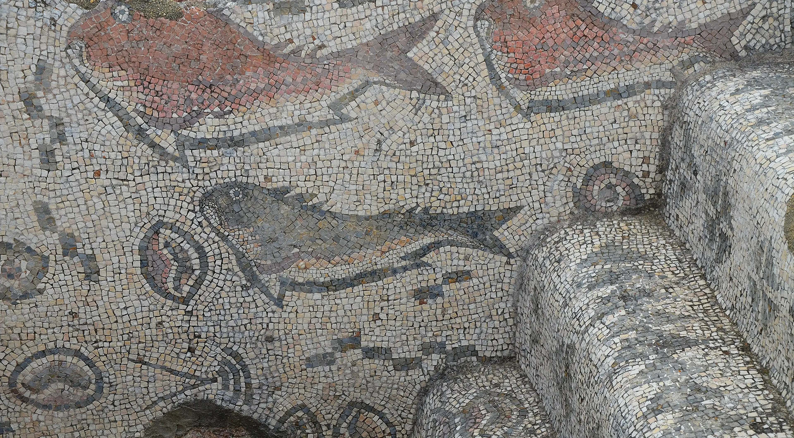
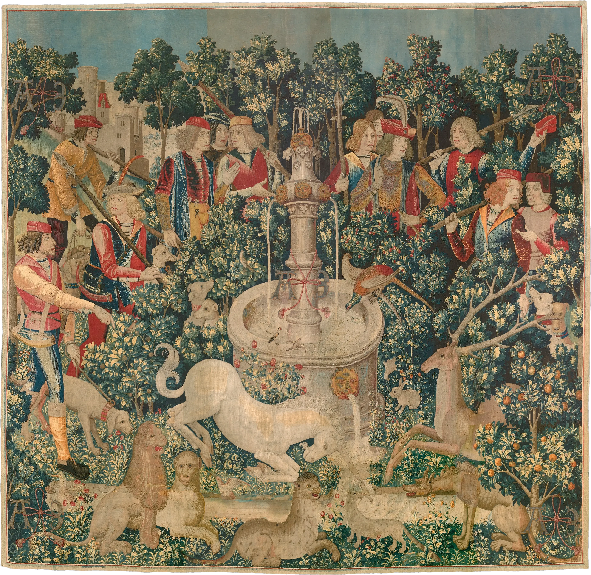
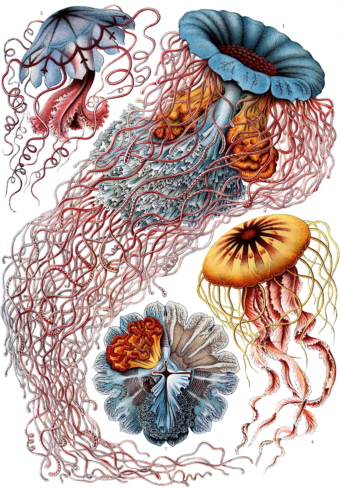
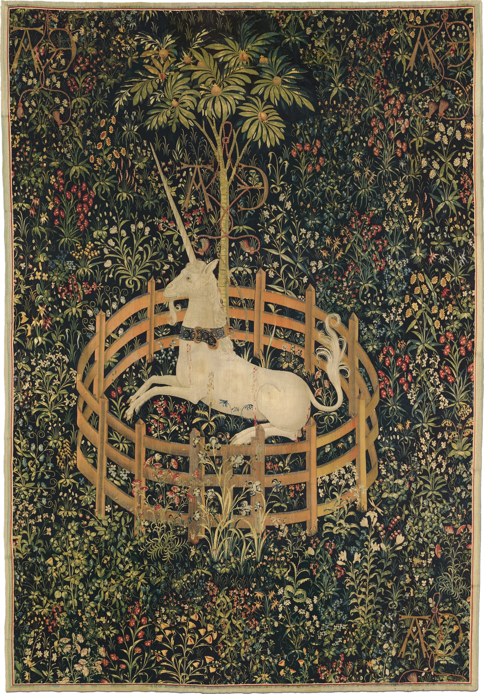
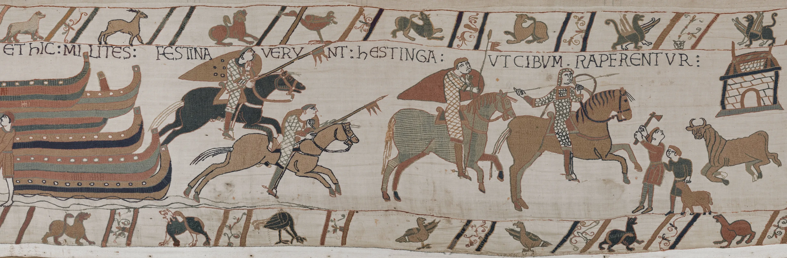
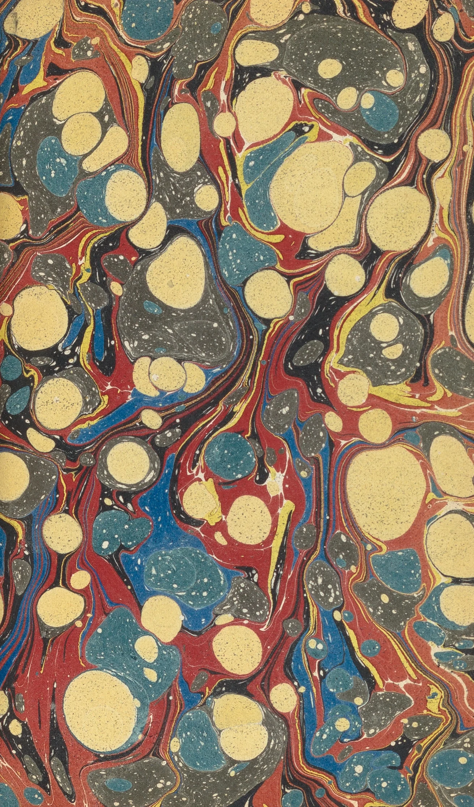
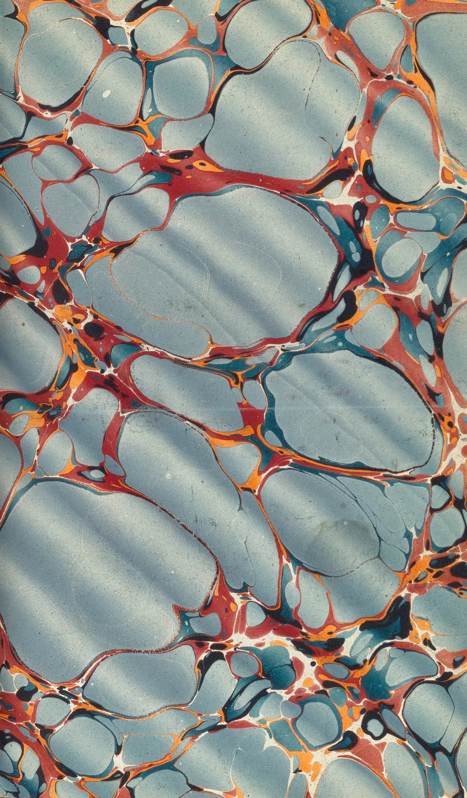

Add something real here. A thought you wouldn't put on the main page.
What you're actually thinking about. What you're reading. What scares you or excites you.
I work where data meets machines. Datasets that teach a robot to read a hand in motion,
rigs that capture the motion in the first place, and the quiet curation in between:
deciding what is worth learning from. The road to general intelligence is mostly
unglamorous. Labels, calibration, tolerances. I would rather make the data right than
make the model loud.
Set line by line in JavaScript around the drawing's outline. Pick it up.
The details are not the details. They make the design.
Charles Eames

touch the water
An essay on windows
The Shape of a Room’s Light
On panes, lattices and leaves, and what the sun keeps of each on its way to the floor.
Every patch of sunlight on a floor is a picture of the window it came through. The panes are there, and the glazing bars between them, and the sill, all leaning the same way and stretched long by the lowness of the sun. You can read the hour from it the way you read a sundial: in the morning it lies short and close to the wall, by late afternoon it has crept out across the boards and turned to the colour of honey.
But it is never quite a copy. Look along a patch from the wall outward and its edges change. Where the light has only just passed the sill they are sharp enough to cut paper. Further out, where it has travelled a long way from the top of the window, they go soft, as if drawn in chalk and then brushed with a sleeve.
Half a degree
The reason is the sun itself, which is not a point but a disc, a little over half a degree across. Every edge of a window casts not one shadow but a whole fan of them, one from each part of that disc, and the fan widens with distance. Near the sill the fan has had no room to open. A couple of metres out it has spread by about two centimetres, and the edge you see is that spread: the penumbra, the place where part of the sun is hidden and part is not.
This is why the thin bars of a sash window throw crisp lines close to the wall and almost nothing further out. A bar narrower than the penumbra cannot hide the whole sun from anywhere; its shadow thins to a faint grey seam and then disappears, while the heavy meeting rail in the middle holds on for much longer.
Vilhelm Hammershøi painted the rooms of his flat at Strandgade 30 in Copenhagen for more than a decade, and again and again he painted this: a window, a door, and the window set down on the floor as a skewed grid of pale light. He left out almost everything else. The furniture went, then most of the people. What stayed was the light keeping its appointment with the boards.
Vermeer’s rooms are lit almost always from the left, through tall leaded casements that we see only in part. He paints what the light does once it is inside: how it lies along a sleeve, a brass basin, a map on the wall, and how the far side of the room falls away into a cool, blue-grey shade. The window is the source of everything and is barely shown.
A shadow keeps the shape of what cast it only as far as the sun allows.
Glass, stone and leaves
Roman glaziers cast their panes in flat moulds, and the glass came out thick, faintly green and full of small bubbles; it let in light rather than a view. The Pantheon needed no glass at all. Its oculus, some nine metres across, throws a single great disc of sun onto the coffers of the dome, and through the day that disc walks slowly round the inside of the building like the hand of a clock.
In the hot cities of India and the Islamic world the window was often stone, carved through into a jali: a screen of interlocking stars and polygons that keeps out the glare and the eyes of the street and lets the air move. The light that comes through a jali is the pattern itself, printed across the floor in stars. Close to the screen each star is perfect. Further out the points blunt and fill, and the farthest stars become simple round spots of light.
Those round spots are the same thing that happens under a tree. A gap between leaves is a pinhole, and a pinhole makes a picture of whatever is bright beyond it, which on a clear day is the sun. So the dapples on a path in summer are not leaf-shaped at all. They are dozens of small round suns, stretched into ovals when the sun is low, overlapping where the canopy is thin, trembling when the wind moves the branches. A text attributed to Aristotle already asks why sunlight through a square hole makes a round patch, and during an eclipse every one of those suns becomes a crescent.
Thin cloud changes all of it at once. The light dims, but it also softens: the sun’s disc swells into a bright haze, every penumbra widens, the jali’s stars round off and the dapples blur into one another. Then the cloud passes, the edges come back, and the room is exactly as it was.
Fin
Komorebi
sunlight through leaves
loupe



pull the cloth


marbling

scroll
They gave it to the winner full of oil, pressed from the sacred olives of Athena that grew in the groves outside the city, and a man who won the foot race or the wrestling might carry home enough of these jars to keep his family for a generation. Every one was made to the same measure, as the law required, and every one was painted in the old way, black figures on the red of the clay, long after the potters of the Kerameikos had learned to do the reverse, because a prize should look like the prizes of grandfathers. On the far side the goddess strides out with her spear raised and her shield on her arm, between two columns topped with cockerels. On this side men fight with their hands and their feet. It is the pankration, the all-in fight, where anything was allowed except biting and gouging, and a judge in a long cloak stands over them with a forked rod, ready to bring it down on the one who cheats. One man has caught the other by the leg; the other has his fist drawn back. Nobody yet knows who will win. The clay was dug beside the river and left out to weather, then washed and settled and kneaded until it was smooth, and thrown on the wheel in pieces, foot and body and neck, that were joined when they were leather-hard. The painter laid the figures on in a slip of the finest clay, which looks no different from the rest until the kiln does its work: a fire with air, a fire starved of air, then air again, and the slip stays black and glossy while the body turns back to orange. Then he scratched the muscles and the folds of the cloak in with a needle, line by line, so that the red shows through like blood under skin. Across the city the athletes trained naked in the gymnasium and oiled themselves before and scraped themselves clean after, and the oil came from the same trees. The winner's name was cried out in the stadium and cut into stone, and he was given a crown of olive and these jars by the dozen, sealed with clay and stamped. Some were sold abroad, which was allowed, and went on ships to Etruria and the Black Sea, packed in straw, and were buried with men who had never seen Athens. The oil was used long ago, for lamps and for cooking, for bread and for the bodies of the dead, and the winner's name has gone with it. What is left is the clay, which does not rot, and the black that the fire fixed in it, and the fight, still undecided: two men locked together under the judge's raised rod for two and a half thousand years, waiting for someone to fall.
At Jingdezhen the whole town lived by the colour of the smoke. There were so many kilns, and they were fired so often, that travellers said the place looked from the hills like a city under siege, and at night the sky over the river glowed red. The clay came down from the high ridge at Gaoling, white as rice, and the stone that made it glassy came from another hill; both were crushed by water wheels, washed, settled in pits and left to age in the dark until they were smooth as skin. No one made a pot alone. One man threw the gourd in two halves on a wheel turned by a boy, and another joined them and trimmed the waist; one ground the cobalt, one drew the outlines, one only filled them in, another wrote the mark on the foot, and a single vase could pass through seventy pairs of hands before it was fired. The cobalt came from Persia at first, along the same roads as the horses, and later from the hills of Zhejiang. With a brush of rabbit hair the painter laid it over the raw body in vines and leaves and little hanging gourds, which wish a house full of sons, and bats among them, because the word for bat sounds like the word for luck. Nothing showed. The blue went on grey and dull as ash, and you had to trust your hand. Then the glaze, poured on, or blown on through a tube of bamboo; then the pots set in saggars of coarse clay, stacked in columns to the roof of the kiln, and the door bricked up and the fire lit with pine. For three days and two nights the stokers fed it and watched the flame through a spyhole, judging by its colour, white with yellow at the heart, when the heat was enough to turn sand to glass. Then they let it die and waited for the bricks to cool. When the saggars were cracked open the colour had arrived, deep and wet as the sea at evening, under a skin of ice that will never melt. The best went north on the Grand Canal to the palace; the rest went south to Canton, and from there in the holds of the Dutch ships to Amsterdam, packed in tea, where people who had never seen a gourd vine paid a fortune for the picture of one and set it on a high shelf in a cold room by the sea. This one came to New York in the end. It has stood there through every winter since, and the bats still hang among the leaves, and the luck they promise has not yet been used up.
scroll
They painted him while he was alive, most likely, and hung the picture in the house, where it watched the family eat and argue and light the lamps for years before it was needed. When he died it was taken down, trimmed to fit, and bound into the linen over his face, so that the body went into the dark looking out. This was the custom in the Fayum, the wide green basin west of the Nile where a branch of the river runs off into a lake, in the first centuries after Rome took Egypt from the last of the Ptolemies. The people there were a mixture nobody bothered to untangle: the grandchildren of Greek soldiers settled on the land by the old kings, Egyptians who had married them, Romans, Jews, Syrians, veterans of the legions given plots to farm. They spoke Greek in the market and wrote their leases and their letters in it, kept the crocodile god of the lake alongside Isis and Serapis, and went to their graves in the old way, dried with natron, wrapped in linen and resin, as Egyptians had for three thousand years. Only the face was new. Where an older age had set a calm gilded mask over the dead, the same serene face for everyone, these families wanted the face itself: this boy, this nose, the small closed mouth, the ears that stand out a little from the cropped dark hair. The paint is wax. Beeswax, bleached in the sun and melted with a little resin, mixed while warm with ground earths and minerals, yellow and red ochre, umber, lead white, the black of soot and burnt bone, and laid onto a thin board of lime or fig wood with a brush and a heated metal spatula. Wax sets as it cools, so the painter worked fast and in small strokes, and you can still see them: the cheeks built up in short warm touches that follow the turn of the face, the hair pulled down in long strokes from the crown, a single fleck of pure white in each eye, which is where the light lives. Wax does not yellow and crack the way oil does. Kept dry in the sand it holds its colour very nearly as it was laid, which is why these faces seem so near, nearer than anything else that has come down to us from the ancient world. The eyes are the first thing and the last. They are too large, larger than any child's, dark and wide open under heavy brows, and they do not quite meet yours; they look a little past you, the way a person looks who is listening. Painters all over the Fayum made them so, on purpose, and nobody can now say exactly why: to make the dead alert, perhaps, or to give them the gaze of someone who already sees the next world. Across the neck of his white tunic someone has written in Greek, in small black letters, a name, Eutyches, which means the lucky one, a name often given to slaves and kept by them when they were freed. Who wrote it, and for whom, is not certain. We know almost nothing else: not his parents, nor how old he was when he died, nor whether the painter was a friend of the family or a craftsman in the town who turned out a dozen of these a month from a stock of eyes and noses and fashionable curls. About a thousand portraits like his survive, most of them from the cemeteries at Hawara and er-Rubayat, dug out of the sand in the nineteenth century, many cut from their mummies by dealers and sold to collectors in Europe as paintings, which is what they had become. Hundreds of faces: men with curled beards in the fashion of Hadrian, women with gold wreaths and pearl earrings and their hair in braided crowns, soldiers with sword belts across the chest, old men, young wives, children, all of them staring out of their wooden boards as if from a row of windows. Then, over a few generations, the custom faded. The faces grew flatter and more alike, the eyes larger still, until they were less like anyone in particular and more like a holy type, and the same large still eyes, painted in the same hot wax on the same small wooden panels, turned up again on the first icons of the saints. The boy was not a saint. He was a child in a provincial town on the edge of the desert, with a freedman's name and a clean white tunic and his hair cut short for the summer, and someone who loved him paid a painter to keep his face. It has been kept. Nineteen hundred years on he still has the look of a boy who has just been called in from outside and is waiting, politely, to be told why.
He was past seventy when he made it, and he signed it with one of the many names he gave himself over a long life, the old man mad about painting. It is the first of the thirty-six views of Mount Fuji, a set of prints for the pleasure of ordinary people in Edo, sold for about the price of a double bowl of noodles. Three long boats are carrying fish to the city market, eight rowers to a boat, and the men have shipped their oars and lie flat against the hulls, because there is nothing else to do. The sea has risen into a wall above them and is about to fall. Its crest breaks into claws of foam, and the foam blows off it in flakes like snow, and far off, under all of it, small and still and white, is the mountain. Hokusai drew the picture in ink on thin paper. The paper was pasted face down on a block of cherry wood, and a carver cut away everything that was not line, leaving the drawing standing up in relief and destroying it in the process. More blocks were cut for each colour. A printer brushed the colour onto the wood, laid damp paper over it, and rubbed the back with a flat pad of coiled cord until the colour came through, one block after another, each aligned to the last by a notch and a corner cut into the wood. The blue is new. It is Prussian blue, a pigment first made by accident in a Berlin laboratory, carried to Japan by Dutch and Chinese ships, and cheap enough by then to use freely; it does not fade the way the old blues from dayflower did, and it gave the printers a deep, cold, wet colour the sea had never had on paper before. Thousands of impressions were pulled, until the blocks wore down and the fine lines of the spray began to break and blur, and the earliest prints, with the sharpest foam, are the ones collectors now look for. They were pinned to walls and folded into albums, some went to Europe in the holds of trading ships, and the painters of Paris found them there and could not stop looking. The wave has been falling ever since, and has never fallen, and the boats are still in the trough, and the mountain still waits, as patient as snow.
scroll
You came in from the street out of the heat and the noise of the port, paid your coin to the doorkeeper, left your clothes with a slave you trusted, and walked out across the sea. It was underfoot the whole time: a white floor as long as a ship, and on it, in black, the god of the sea driving four horses that are horses only as far as the chest, and after that are fish, their tails thrashing and looping into coils. He stands upright with a trident in one hand and the reins loose in the other, and his cloak blows out behind him in a great hoop, as if the wind were coming from the direction he is going. Around him the whole of his household rides along: tritons blowing on shells, sea nymphs lying back on the scaly necks of monsters as if on couches, dolphins, a sea bull, a sea panther, a sea goat with a curled horn, and between them all the little leafy sprays that stand for waves. Nobody had to be told who they were. The town lived by the water. Every sack of grain that fed the city upriver came through this harbour, and the men who carried it, counted it, taxed it and shipped it bathed here after work and walked over this god twice a day. The baths were begun in the reign of Hadrian and finished under his successor, and the floor was laid at the same time, by a workshop that did nothing else, in the way that had become the fashion in this town and nowhere else quite so well: no colour at all, only black stone and white. White limestone for the ground, black for the figures, and the details drawn back into the black with lines of white, so that a muscle, a mane, a fin or the scales of a tail are a few white stones in a row. It is the cheapest way to make a mosaic and the hardest to make a good one, because there is nowhere to hide. Every outline shows. The mosaicists laid the figures first, a row of black stones hugging each edge, then another inside it, and only then filled in the bodies; the white was laid last, in long straight rows across the floor, with the rows near each figure bending a little to follow it, like water moving round a post. Seen from the gallery above, which is where you are meant to see it from, the whole thing reads at once, the god and his horses in the middle and the rabble of the sea around them, like a drawing in ink on a page. Down on the floor, with your feet on it, it is only stones, thousands of them, each a little square of black or white no bigger than a fingernail, set by hand in a bed of mortar one at a time. The water was let out when the town emptied, the roofs fell in, and the river silted up the harbour and moved the coast two miles away. The floor stayed. It is still there, in the open air, and on a hot afternoon the god drives his horses across it toward a sea that is no longer anywhere in sight.
In the town by the lake the kilns were never cold. The tiles were not clay at all but stone, white quartz from the river crushed to a flour and mixed with ground glass and a little white clay to make it hold, so that when it was fired it rang like a cup and took the colours the way snow takes ink. The designs came from the palace in Istanbul, drawn on paper by the court painters and sent out along the road with the orders: so many tiles for a mosque, so many for a tomb, so many for the walls of a room where the sultan would sit for an hour on a summer evening and never come again. At the workshop they pricked the drawings along every line and laid them on the tiles and pounced charcoal through the holes, so the same tulip could be put down a thousand times and still be drawn by hand. Then the painters went over it. Black for the outlines, with a brush of a few hairs. Cobalt, which was dug in Persia and came along the caravan roads, for the rosettes and the deep blue of the borders. Turquoise and a cool green from copper for the long serrated leaves that bend as if a wind were going through the wall. And last, the red. Nobody else in the world could make it. It was a clay from the mountains in the east, rich in iron, and it had to be laid on so thick that you can feel it standing up under the glaze with your fingertip, like sealing wax, and fired at exactly the heat that would fix it without turning it to brown or leaving it to run. For fifty years they made it perfectly, and then the orders fell away and the masters died and the red went thin and muddy, and it was never made again. A tile panel is put up the way a mosaic is laid: one square at a time, from a plan, into a bed of mortar, each tile carrying a piece of a flower that only exists when all of them are in place. You can still see the joints. The lattice runs across them in red ribbons strung with small white blossoms, and in each opening there is a tulip, or a carnation, or a hyacinth with its head bowed, or a great blue rosette turning like a wheel, and the whole thing repeats upward toward a ceiling it was never hung under. Somebody pried it off a wall, at some point, carefully, and packed it in straw. It hangs now in a museum in Brussels, where the light is grey and the visitors come in wet coats, and every one of them who stops in front of it is standing for a moment in a garden in spring four hundred and fifty years ago, where it is warm and nothing is ever going to die.
turn
Someone cut forty-five little stamps: a running man, a plumed head, a child, a fish, a bird in flight, a ship, a hide, a comb, a flower with eight petals. Then one day, in a palace above the plain of the Mesara, they took a disc of the finest clay while it was still soft, drew a spiral on it with a point, and began at the rim. Each sign went in under a thumb, one after another, and every word was closed with a short stroke across the line. They turned the disc as they worked, round and in, round and in, until they came to the middle and the clay was full; then they turned it over and filled the other side. Afterwards it was fired as hard as a tile, and kept. That was more than three and a half thousand years ago. It lay in the ruins of the palace until the summer of 1908, when an Italian archaeologist lifted it out of a basement room beside a broken tablet, and since then it has been read by everyone and by no one. Two hundred and forty-two signs in sixty-one words, and not one of them understood. It has been called a hymn to a mother goddess, a roll of soldiers, a calendar, a contract, a board game, and a fake. Nobody has found another page made with those stamps, or the stamps themselves, though they are the oldest movable type we know of, cut so that a hand could say the same thing again and again. Perhaps they only ever said this. But somebody once held it as you are holding this one, and turned it slowly, and the words came round to them one at a time under the thumb, and they knew exactly what it said.
And this too shall pass
A king, the story goes, asked his wise men for a ring that would make a sad man glad and a glad man sad. They argued for a year. Then the youngest went down to the market, to an old engraver who worked in a doorway with a lamp and a file, and came back with a plain band of bronze. The king turned it in his fingers and read what was cut round the edge, and was quiet for a long time. He wore it at his wedding and at his son's burial, at the signing of the peace and on the night the city burned, on his good days and on his bad ones, and it was true on all of them. When he was old he gave it to a beggar at the gate, who sold it for bread.
pretext-gloss
Cap. I.Ecclesiastes117
The words of the Preacher, the son of David, king in Jerusalem. Vanity of vanities, saith the Preacher, vanity of vanities; all is vanity. What profit hath a man of all his labour which he taketh under the sun?
One generation passeth away, and another generation cometh: but the earth abideth for ever. The sun also ariseth, and the sun goeth down, and hasteth to his place where he arose. The wind goeth toward the south, and turneth about unto the north; it whirleth about continually, and the wind returneth again according to his circuits. All the rivers run into the sea; yet the sea is not full; unto the place from whence the rivers come, thither they return again.
All things are full of labour; man cannot utter it: the eye is not satisfied with seeing, nor the ear filled with hearing. The thing that hath been, it is that which shall be; and that which is done is that which shall be done: and there is no new thing under the sun. Is there any thing whereof it may be said, See, this is new? it hath been already of old time, which was before us. There is no remembrance of former things; neither shall there be any remembrance of things that are to come with those that shall come after.
Lapis
HOSPES QVOD DEICO PAVLLVM EST ASTA AC PELLEGEStranger, what I have to say is short: stop and read it through.
HEIC EST SEPVLCRVM HAV PVLCRVM PVLCRAI FEMINAEHere is the unlovely tomb of a lovely woman.
NOMEN PARENTES NOMINARVNT CLAVDIAMHer parents named her Claudia.
SVOM MAREITVM CORDE DEILEXIT SOVOShe loved her husband with all her heart.
GNATOS DVOS CREAVIT HORVNC ALTERVMShe bore two sons, and of them she leaves one
IN TERRA LINQVIT ALIVM SVB TERRA LOCATon the earth; the other she has laid beneath it.
SERMONE LEPIDO TVM AVTEM INCESSV COMMODOShe was charming in speech, and graceful in her walk.
DOMVM SERVAVIT LANAM FECIT DIXI ABEIShe kept the house. She worked the wool. I have spoken. Go on your way.